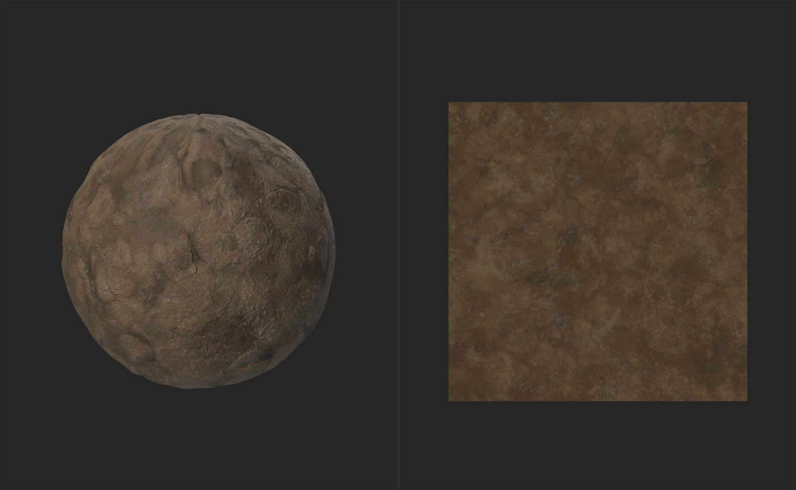
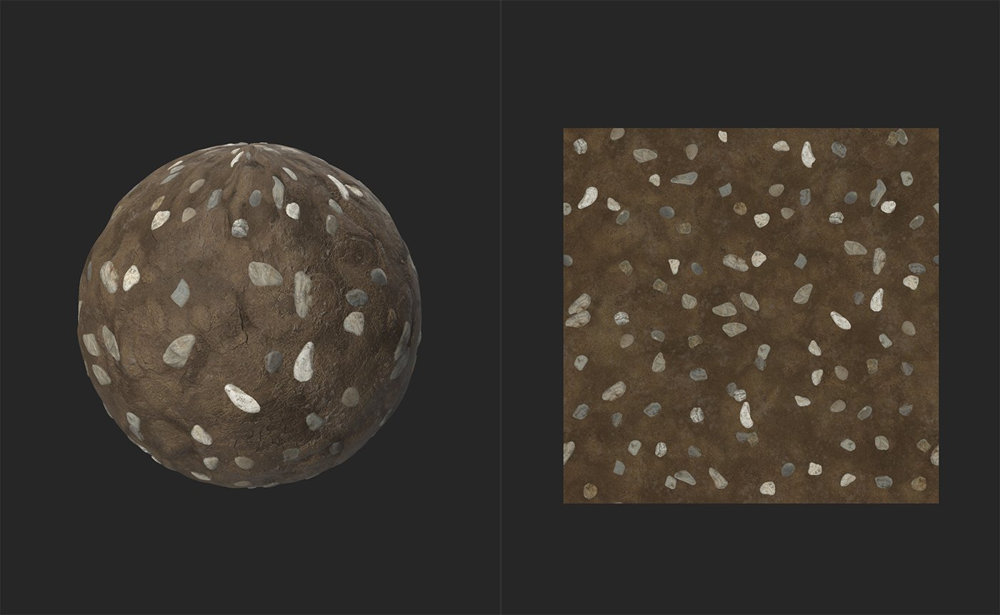

In: Generators
The Atlas Scatter filter scatters instances of the elements within an atlas material across the underlying material. Atlas Scatter is useful for scattering things like leaves, rocks, or trash across a material in a natural way.
The images below show the Atlas Scatter filter in action.

Before the Atlas Scatter filter is used, we have a basic mud material - not very exciting.

By adding the Atlas Scatter filter with a pebble atlas, the material becomes more interesting as pebbles are scattered and blend realistically with the underlying mud.
Basic Parameters
Mask
Size
Height
Rotation
Atlas Material Adjustments
Atlas Shape Detection
Usage Guide
The Atlas Scatter filter is a useful way to scatter assets across your material such as leaves, stones, or trash. To use the Atlas Scatter filter, you will need an atlas material for the filter to process.
An atlas material is a material that holds a collection (or atlas) of separate assets. For example, Sampler includes by default the Dry Laurel Leaves - this is an atlas material because it holds a collection of leaves in a single material where each leaf is separate from each other leaf. The Atlas Scatter node uses an algorithm to handle each leaf from the atlas material as a separate element.
To use the Atlas Scatter filter:
You can adjust the scatter parameters in the Properties panel by selecting the Atlas Scatter layer.
You can adjust the parameters of the atlas material in the Properties panel by selecting the material in the input slot.